Luxury retail, minus the friction.
Modernising the website and app of one of Australia's best-known luxury department stores: a UX audit, a calmer header and navigation, a wishlist built for gifting, sign-in that doesn't get in the way, and an upgraded design system underneath it all.
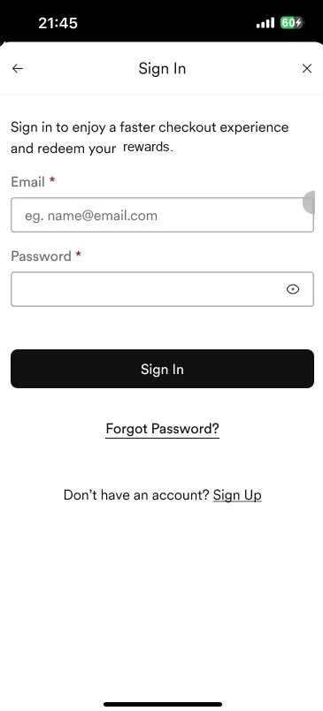
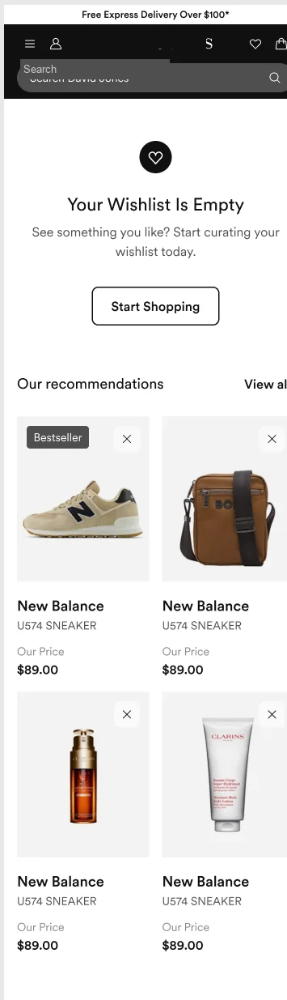
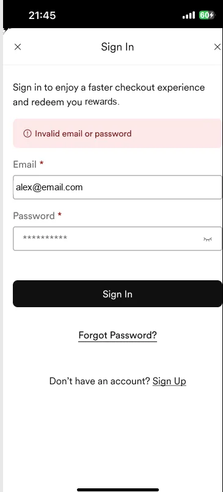
A heritage brand with a legacy website.
The store is a household name, but its online experience had grown piece by piece over years: dense menus, inconsistent components and a legacy design system that slowed every release.
Working in fortnightly sprints with the client's product, engineering and content teams, I audited the current experience, then redesigned the high-traffic and high-value pieces one at a time: the site furniture (header and footer), the wishlist, and authentication on web and app. In parallel I upgraded the design system so every new piece shipped consistently.
Current-state audit
UX heuristics review, live-site testing on desktop and mobile, documentation and typography audit.
Site furniture
Header, mega menu, account menu and footer, tested with customers before sign-off.
Wishlist & sign-in
Save, manage and share wishlists; create account, sign in, reset password and account deletion.
Design system
Upgrading a legacy library into documented, dev-ready components for web and app.
- My role
- UX lead & hands-on design
- Client
- Luxury department store, Australia
- Agency
- Publicis Sapient
- Platforms
- Responsive web, iOS & Android app
- Breakpoints
- XL, L, M and S for every screen
Start with what's already broken
Before redesigning anything, I ran a heuristic review of the live site and tested it on desktop and mobile. Each observation came with a recommendation, so the backlog started with evidence rather than opinions.
Banners that don't look clickable
The landing banner gave no clear cue where to tap, and people spent very little time scanning the first fold.
Make the whole banner clickable and show part of the sale offer above the fold.
Too many choices at once
The more options people see, the longer they take to decide, and the mega menu showed everything.
Lead with the few most obvious paths and reveal the rest progressively.
The header disappears on scroll
Once people started shopping, searching or switching category meant scrolling back to the top.
Keep a minimal header pinned at all times.
Components that behave differently
Tooltips appeared in some places but not others, and banners switched from rounded to square shapes in checkout.
One component, one behaviour, everywhere.
Checkout hides the total
The order total wasn't always visible, and pressing the button shifted the layout so people had to scroll to continue.
Always show the total and keep the main button in a fixed place.
Reviews behind an extra click
Reviews were one of the strongest trust signals but sat behind a tab that was hard to tell apart from inactive buttons.
Surface ratings and reviews up front on the product page.
A mega menu that doesn't overwhelm
The header is on every page, so it's the highest-traffic component on the site. I reviewed twelve retail and travel sites, from Net-a-Porter, ASOS, The Iconic and Mecca to Amazon, Airbnb and IKEA, then explored a progressive-disclosure header and tested the concepts with customers.
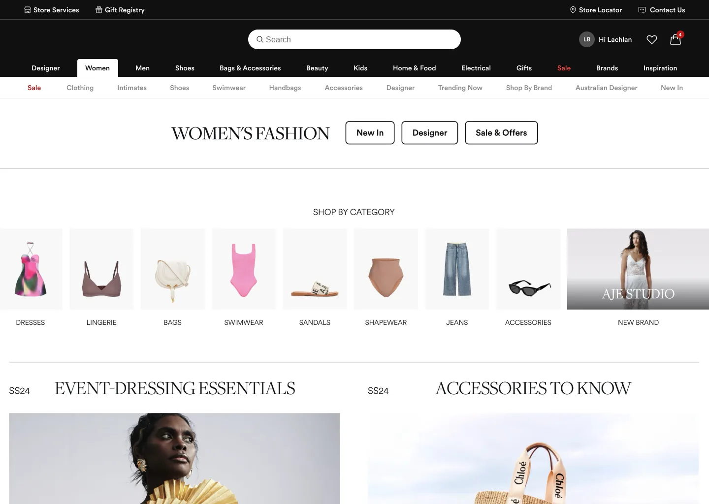
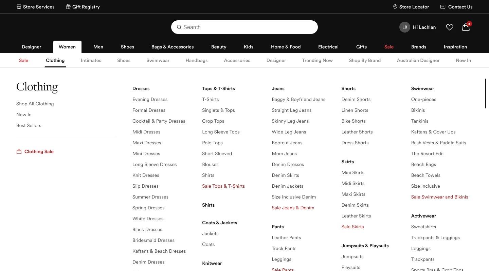
Progressive disclosure
Department, then sub-category, then the full menu. Each level shows a manageable number of choices, which follows the audit's Hick's-law finding.
Search front and centre
The search field moved to the middle of the header and got wider, because it's the first thing many shoppers reach for.
Tested before sign-off
Concepts ran in a customer-testing environment with live content before the final header and footer were handed over.
Built for gifting, not just saving
At a department store, a wishlist is often a gift list: a birthday, a wedding, a new home. So beyond saving items, people needed to name a list, describe the occasion, make it public and share a link, and the person receiving it had to be able to shop from it.
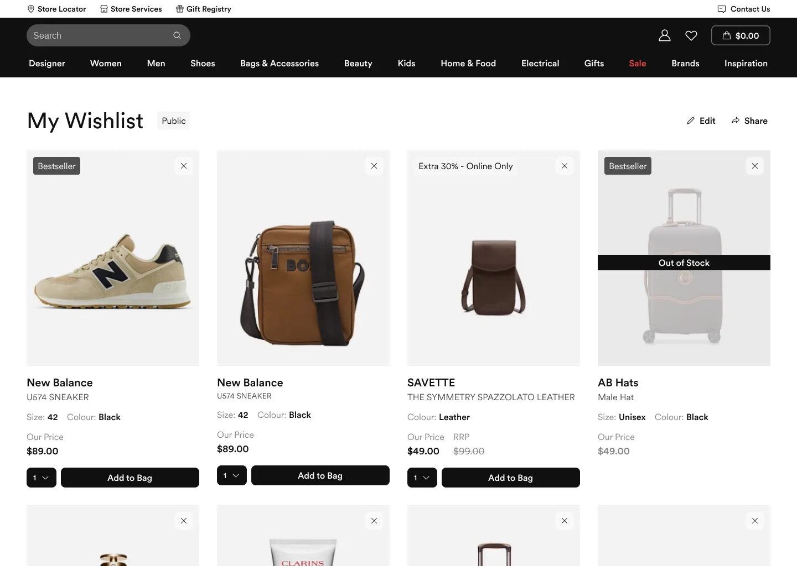
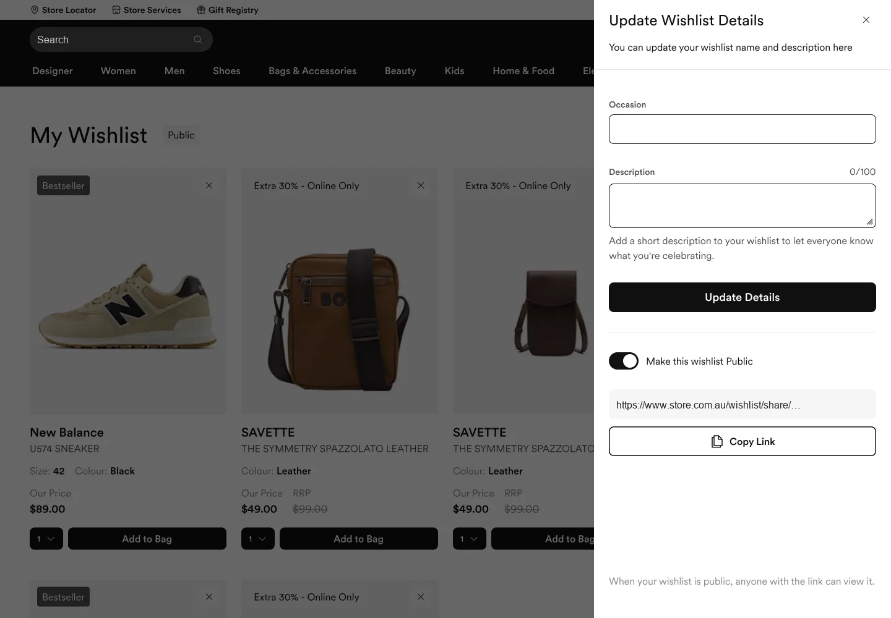
Every state designed, at every breakpoint
Each flow was drawn at XL, L, M and S, including the states that usually get skipped.
Sign in when it's worth it, not before
Browsing stays open to everyone. Sign-in appears when it unlocks something (a wishlist, rewards, faster checkout), as a modal that keeps you in place or a dedicated page from the account menu. I designed six flows: browsing signed out, create account, bot protection, sign in, sign out and account deletion.
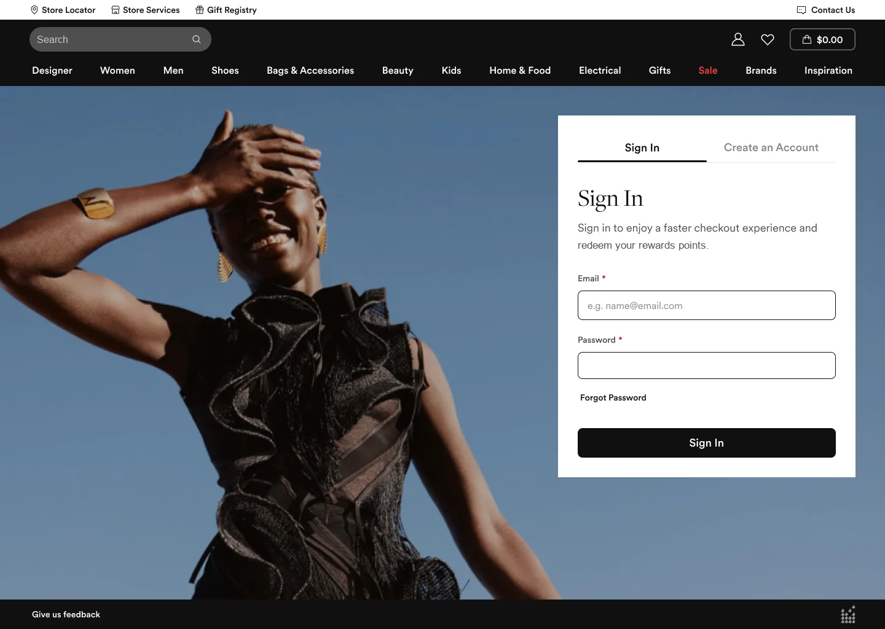
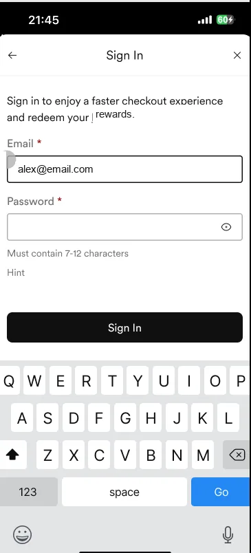
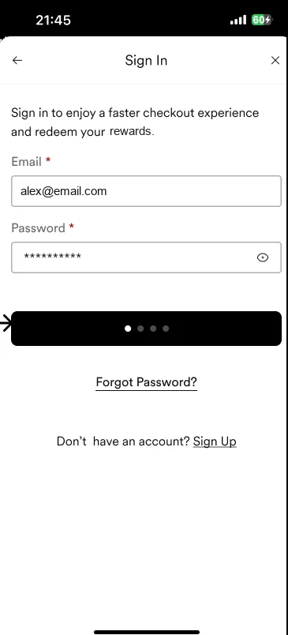
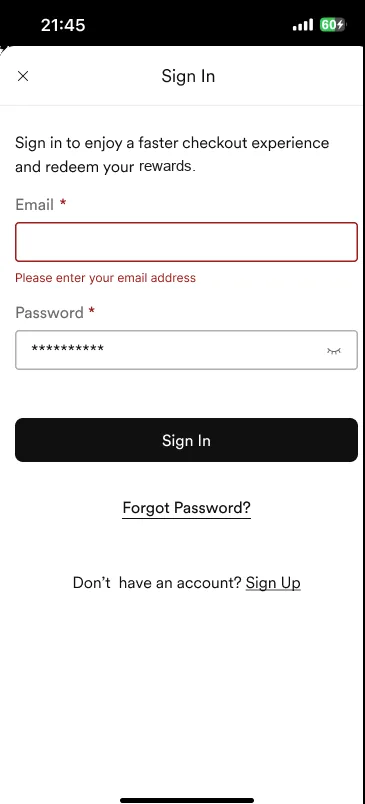
Modal or page, same form
A modal keeps shoppers on the product they were looking at; the page serves people who start from the account menu. Both share one component.
Errors planned up front
General errors, details that don't match an account, API failures and validation positions were all designed before build, not patched after.
Handover checklists
Every flow shipped with a checklist of breakpoints, states and annotations, so developers didn't have to guess.
Upgrading a legacy design system
The goal was to bring an ageing component library up to date for both web and app. I audited where web and app used similar components that could be merged, built foundational components first and then integrated ones, and documented every component down to its anatomy.
1 · Audit web and app
Found the gaps and duplicates across platforms, and showed how much work a shared system would save.
2 · Foundations first
Built base components (accordions, alerts, badges, cards, chips, dialogs and more) before integrated patterns.
3 · Document for developers
Variants and anatomy for every component, plus project covers and annotation kits for Confluence and Jira.
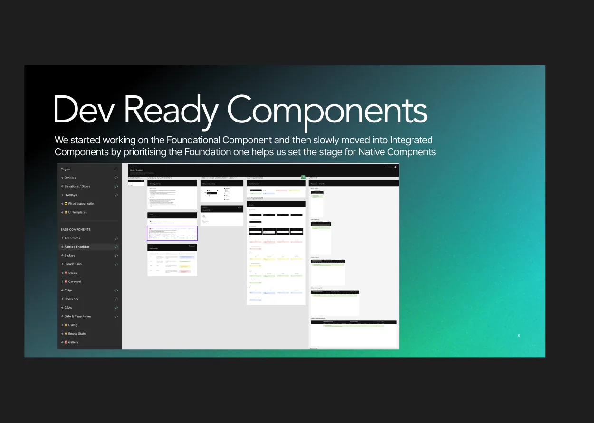
Dev-ready components: the foundational layer set the stage for integrated and native app components.
What changed
UX optimisation across the portfolio, together with the shared design system, lifted client sales year on year.
client sales, every year
breakpoints designed for every screen and state
authentication flows, from browsing to account deletion
retail and travel sites reviewed for the new header
Audit first, then design. Starting from a heuristic review and live-site testing gave every sprint a clear "why", and made sign-off conversations about evidence instead of taste.
Design the unhappy paths. Load errors, share failures and out-of-stock items are where a luxury experience feels cheap. Planning them per breakpoint saved rework in build.
A design system is a delivery tool. Documenting anatomy and variants removed guesswork for developers and let new features ship looking like they belonged.